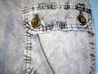
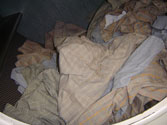
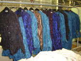

Produktionsprozesse
Durch unsere jahrelange Erfahrung beherscht das Unternehmen viele Produktionsprozesse. Im Folgenden nur einige unserer zahlreichen Angebote:
Pigmentfärben

Färben von Wolle
Die Wolle wird in speziellen Maschinen gefärbt, in denen sich die Kleidung in einer stillstehenden Trommel bewegt, sodass die Wolle nicht verfilzt. Der Färbeprozess wird bei 90 Grad vorgenommen, damit gute Wasch- und Lichtechtheiten erreicht werden.
Enzymwäsche und Behandlung mit Silikonen

Stonewash
Es ist möglich, Stonewash-Erzeugnisse zu behandeln, wenn beispielsweise mit einem Enzym das gewünschte Ergebnis nicht erzielt wurde.
Bleichen (Black denim)

Crushen (Knittern)

Biowäsche oder Antipilling
Unsere Maschinen sind auch für die Behandlung mit Enzymen bestens geeignet.
Schrumpftests
 |